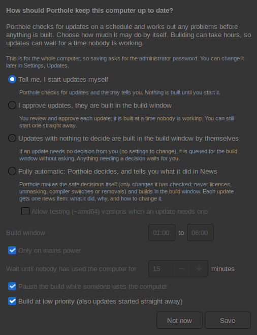

Building updates can take hours on Gentoo. Porthole lets you decide how much it does by itself and when building may happen, so a long build never starts while you are working. The first time Porthole starts it asks; you can change it any time in Settings, Updates. These settings are for the whole computer, so changing them asks for the administrator password.

With fully automatic updates, every update run gets one item in News: what was updated, every change Porthole made and why, how to undo each one, and what it left for you and why. When the build ends, its result (finished, failed or stopped) is added to the same item, which is marked unread again. If a check finds nothing it can build on its own, it says so once, not at every check.
The build window is a time range, such as 01:00 to 06:00 (it may run past midnight). An approved update waiting for it starts when all of these are true:
Anything you start straight away still runs straight away, even while another update waits for the window. The tray shows a waiting update and why it is waiting.
If Pause the build while someone uses the computer is ticked, a build that started in the window is paused as soon as the keyboard or mouse is used, and carries on once nobody has used them for the same time. Nothing is lost; the build just stops using the processor meanwhile.
Watching the build counts as using the computer. To let it run while you are there, choose Keep building: in the bar at the top of the job window, or in the tray menu. That build then isn't paused again.
Build at low priority runs builds at the lowest processor and disk priority, so everything else you do stays responsive. It also applies to updates you start yourself.
If updates have waited three days without being started, the tray reminds you, and every three days after that, more firmly the longer they wait: the longer updates wait, the more likely they need fixing by hand. Remind me next week on the reminder puts the next one off a week. Reminders stop while an update is queued or running. Each person can turn them off in Settings, Updates, Reminders (no password needed).
Next: Syncing